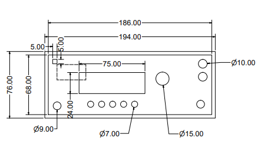
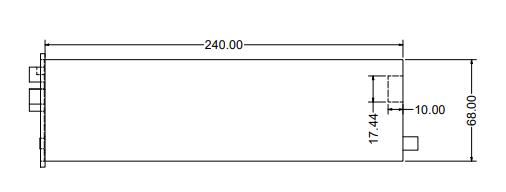
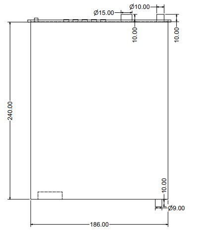
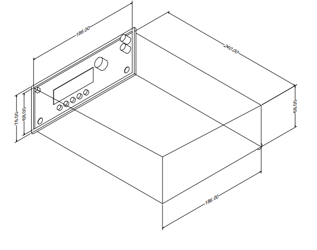

Abstract
This document outlines the design and development of a cost-effective, versatile function generator using the ESP32 microcontroller. The project addresses the demand for affordable signal-generation tools in educational and hobbyist electronics, often limited by the high costs of commercial function generators. The proposed function generator can generate sine, square, and triangle waveforms with a frequency range of up to 10 MHz, incorporating basic AM/FM modulation features. Its modular and user-friendly design ensures adaptability for various applications, including educational use, prototyping, testing, debugging, and integration into IoT and medical devices. The project emphasizes cost-efficiency and practicality by utilizing readily available components, providing a valuable tool for students, hobbyists, and small-scale developers.
Motivation
The development of a versatile and cost-effective F.G. addresses the growing demand for affordable tools in educational and hobbyist electronics projects. Commercial F.G.s are often expensive, making them inaccessible to students and enthusiasts. Using readily available components such as ESP32, this project aims to create a customizable, user-friendly device capable of generating a wide range of waveforms. This F.G. provides a practical platform for understanding signal generation and processing while offering flexibility for various applications such as testing, debugging, and experimental setups in electronics. Its modular design ensures adaptability and ease of integration with other tools, fostering innovation and creativity in the electronics community.
Real-Life Applications
- Educational Use: F.G.s play a critical role in demonstrating signal behavior, analyzing electronic circuits, and fostering a deeper understanding of communication systems.
- Hobbyist and Maker Communities: A compact and affordable function generator allows hobbyists to experiment with new ideas and push the boundaries of innovation.
- Testing and Debugging: Engineers rely on F.G.s to test circuits such as amplifiers, filters, and power supplies.
- Prototyping and Research: Researchers benefit from customizable waveform generators to design, simulate, and analyze systems.
- Medical Devices and Instrumentation: In medical electronics, FGs are used for biosignal processing systems and instrumentation for diagnostics and therapy.
- IoT and Embedded Systems: This device is vital for small-scale developers in IoT device testing and signal integrity.
Overview of the Proposed Design
- Signal Generation: The ESP32 microcontroller, programmed using the Arduino IDE, will generate sine, square, and triangle waveforms.
- Frequency Range: Usable waveforms up to around 6 MHz to 10 MHz with some filtering and buffering.
- Modulation:
- FM-like effect: By rapidly updating the ESP32's frequency parameters in software.
- AM-like effect: Using an external circuit or toggling output amplitude registers.
- Output Buffer/Amplification: A simple op amp or transistor stage to provide stable amplitude and offset.
- Frequency Display: A small 16x2 LCD or 0.96" OLED for showing the output frequency and the waveform type.
- Basic Frequency Counter (Optional): Measuring signals up to ~6--8 MHz directly with an Arduino.
Block Diagram




Detailed Project Steps
ESP32 Selection and Preparation
- Select an ESP32.
- Familiarize with Arduino IDE for programming.
Output Buffer / Amplifier Stage
- For adjustable offset or amplitude, use a potentiometer or a digital potentiometer in the feedback path.
Modulation (Basic AM/FM)
- FM-Like Modulation: Update frequency register periodically to simulate frequency modulation.
- AM-Like Modulation: Use external circuits or amplitude register toggling for amplitude modulation.
User Interface
- Display: Use a 16x2 LCD or a 0.96" OLED to show frequency, waveform type, and amplitude.
- Input Controls: Use buttons or a rotary encoder to adjust frequency and waveform type.
Software / Firmware
- Use Arduino SPI library.
- Main loop: Read inputs to adjust frequency and waveform type.
Frequency Counter
- Implement a simple frequency counter using Arduino libraries (e.g., FreqCount).
- For higher frequencies (up to 50 MHz), use external prescaler ICs (costly).
Components to be used
| Component |
Quantity |
| ESP32 |
1 |
| 16x2 LCD with I2C OR 0.96" OLED |
1 |
| Rotary Encoder with Push Button |
1 |
| Op Amp (e.g., LM358, TL081) |
1 |
| BNC/SMA Connector for Output |
1 |
| Miscellaneous Passive Components |
-- |
| Tactile Push Buttons |
2--3 |
| 5V Power Supply |
1 |
Cost-Cutting and Final Notes
- Use simple and affordable components (e.g., push buttons instead of expensive encoders).
- Opt for commonly available parts in DIY electronics kits.
- Build the entire system around the ESP32 to reduce costs while maintaining versatility.
Summary
This project provides a cost-effective and versatile function generator capable of generating sine, square, and triangle waveforms. By leveraging the ESP32 and combining software-controlled modulation, signal amplification, and basic frequency counter techniques, it addresses the need for affordable signal-generation tools. This solution offers an educational platform for understanding waveform behavior and signal processing, with applications in prototyping, testing, and debugging. The final design emphasizes modularity, user-friendliness, and adaptability to various use cases.